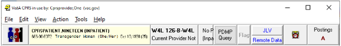

There are several items accessible from any tab in CPRS, most of which are located in the top of the CPRS window. These items are:
Note: A section introduced with patch OR*3.0*508, located by default under the top bar/banner and to the left-side of the screen.
Note: When a user resizes the CPRS window enough, the buttons can be hidden although they are still there. To ensure that users can still get to the information that these buttons provide, an Information menu item was added to the View menu. This item enables users to access the information from these buttons, even if the buttons are not visible because of screen size.
A detailed explanation of each of these buttons is included below.
Refresh Encounter Location Form dialog box.

Items available from any CPRS tab
Related topics
Context Management (CCOW) in CPRS
Additional Patient Information (Patient Inquiry)
Patient Insurance and My HealtheVet